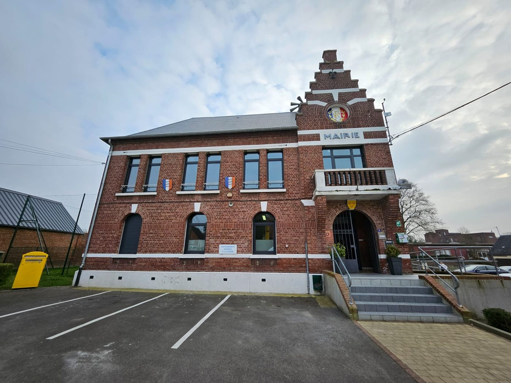
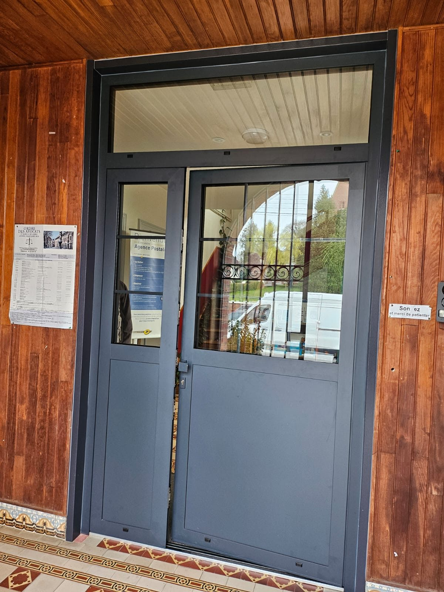
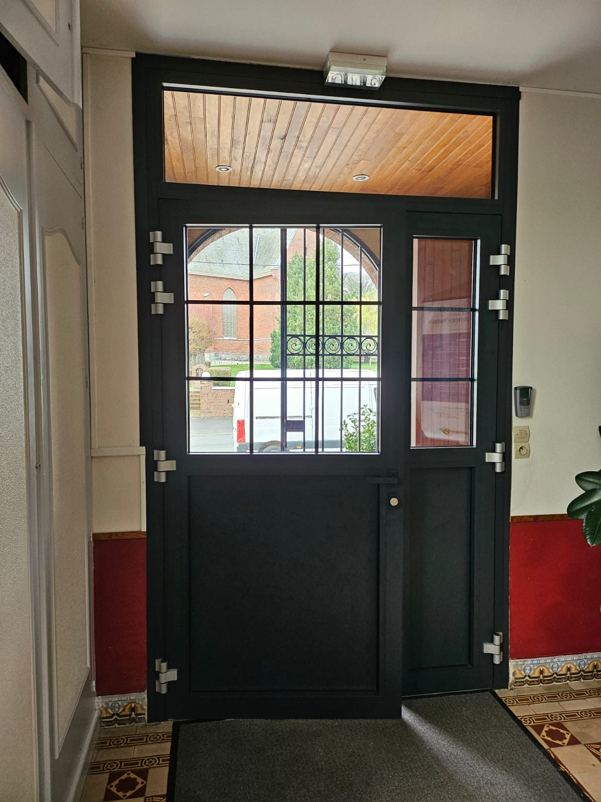

Crèvecœur-sur-Escaut
Un coup de jeune pour la mairie : menuiseries et volets remplacés, en gris anthracite RAL 7016.
Sur un bâtiment en brique de ce caractère, la teinte sombre souligne les encadrements et modernise l'ensemble sans le dénaturer.


